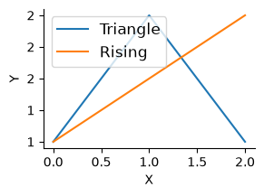

from fastcore.test import expect_fail,test_eq
import string,types,subprocesssafepyrun
Helpers and setup
_find_frame_dict walks the call stack looking for a frame whose globals contain sentinel. This lets RunPython find the caller’s namespace without requiring an explicit globals dict. If no sentinel is found, it falls back to its own module globals.
_test_sentinel = True
d = _find_frame_dict('_test_sentinel')
assert '_test_sentinel' in d
d2 = _find_frame_dict('nonexistent_sentinel_xyz')
assert d2 is not None_test_sentinel = True
d = _find_frame_dict('_test_sentinel')
assert '_test_sentinel' in d
d3 = _find_frame_dict('')
assert d3 is not Nonefind_var('_test_sentinel')TrueBuiltins and wrappers
mon_disable_policy is mutable module-level configuration for cheap sys.monitoring DISABLE decisions. freeze_mon_policy snapshots it for a single run so policy checks are stable while code executes.
on_call
def on_call(
caller, callee, fn, code, off, data, calls
):Fast monitoring callback to decide if event should be DISABLEd
on_call uses only caller/callee names, call pairs, prefixes/suffixes, and optional predicates to decide whether this call site can be disabled for performance. Since fastaudit raises audit events for sys.monitoring c-call events, they can also be checked there when args/kwargs policy checks are needed.
frame_args
def frame_args(
fr, obj:NoneType=None
):Introspection helper used before audit denies an op; check whether it happened inside an approved call
Check on a plain function, including normal positional arguments, keyword-only arguments, and extra **kwargs:
def some_tool(path, text, *, overwrite=False, **kwargs): return frame_args(currentframe())
args,kwargs = some_tool('path', 'text', overwrite=True, a='b')
test_eq(args, ['path', 'text'])
test_eq(kwargs, {'overwrite': True, 'a': 'b'})With methods removes self from the returned positional arguments:
class F:
def some_meth(self, path, text, *, overwrite=False, **kwargs): return frame_args(currentframe(), self)
args,kwargs = F().some_meth('path', 'text', overwrite=True, a='b')
test_eq(args, ['path', 'text'])
test_eq(kwargs, {'overwrite': True, 'a': 'b'})list(_prefix_keys('a.b.cc'))['a.b.*', 'a.*']test_eq(_ctx_check(..., 'save', None, ['x'], {}, {}), None)
test_eq(_ctx_check({'save'}, 'save', None, ['x'], {}, {}), True)
test_eq(_ctx_check({'load'}, 'save', None, ['x'], {}, {}), False)
test_eq(_ctx_check({'load', ...}, 'save', None, ['x'], {}, {}), None)seen = []
def ok(obj, a, kw, data): seen.append((obj, a, kw, data))
def bad(obj, a, kw, data): raise Exception('denied')
seen.clear()
test_eq(_ctx_check({('save', ok)}, 'save', None, ['x'], {'force': True}, {'d': 1}), True)
test_eq(seen, [(None, ['x'], {'force': True}, {'d': 1})])
with expect_fail(): _ctx_check({('save', bad)}, 'save', None, ['x'], {}, {})
class T: pass
t = T()
seen.clear()
test_eq(_ctx_check({('save', ok)}, 'save', t, [t, 'x'], {'force': True}, {'d': 1}), True)
test_eq(seen, [(t, ['x'], {'force': True}, {'d': 1})])These three checkers share a three-valued protocol: True means a registration explicitly allows the call, False means nothing matched, and None is a soft match, from an allow-all (...) entry. Hard results win over soft ones, so a (name, policy) registration keeps first claim on its method even when a blanket 'pkg.*': ... entry also covers it: the policy’s verdict, True or a raised PermissionError, is decided before the soft match is consulted.
_ctx_check checks one pytool registration set for a matching name. Direct name matches return True; for validator tuples it calls the validator with (obj, args, kwargs, data), returning True if it passes and collecting denials into one PermissionError otherwise; allow-all returns None. It exists so module, class, tracked-call, and frame-call checks all share the same validator logic.
_call_allowed checks one logical CallInfo against the pytool registry: at module level, by module-prefix keys (_prefix_keys turns a.b.c into a.b.* and a.*), for the specific bound instance, and at class/MRO level. The first True wins; a soft match from any level is remembered and returned as None only after every level has had the chance to match hard. It exists to centralize pytool lookup for both async tracked calls and stack-frame fallback calls.
_ctx_allowed checks every logical call in a DenyInfo. It returns True if any call matches hard, else whether any call matched softly, so a blanket allow anywhere in the stack still permits the operation. It exists so before_deny no longer duplicates stack walking or call matching logic.
DenyInfo
def DenyInfo(
event, args, frame, msg, data, calls, frame_args
):Initialize self. See help(type(self)) for accurate signature.
CallInfo
def CallInfo(
fn:NoneType=None, args:tuple=(), kwargs:NoneType=None, module:NoneType=None, qualname:NoneType=None,
name:NoneType=None, frame:NoneType=None, source:NoneType=None
):Initialize self. See help(type(self)) for accurate signature.
RawDenyInfo
def RawDenyInfo(
args, frame, msg, calls, frame_args
):Initialize self. See help(type(self)) for accurate signature.
DenyInfo is the public object passed to pre_deny. It exposes event, data, call, args, kwargs, calls, native_calls, tracked_calls, and frame_calls, with raw audit details under raw. For fastaudit.call events, native_calls holds a CallInfo synthesized from the dotted callee name (a native callee has no Python frame and no tracked call), so registrations for extension classes and modules are checked too. It exists to make policy callbacks ergonomic while preserving access to lower-level audit information when needed.
Instance keys let a registration target one specific callable instance rather than a whole class — the case for dynamically-generated client ops (e.g. fastspec’s OpFunc), where every op shares the same __call__. _call_allowed probes the registry with the bound object itself (skipping unhashable objects), so allow(op) permits that op alone:
class _Op:
async def __call__(self, x): return x
op1,op2 = _Op(),_Op()
tst = dict(pytools={op1: {'__call__'}})
test_eq(_call_allowed(CallInfo(fn=_Op.__call__, args=(op1,'x'), module=__name__, qualname='_Op.__call__'), tst), True)
test_eq(_call_allowed(CallInfo(fn=_Op.__call__, args=(op2,'x'), module=__name__, qualname='_Op.__call__'), tst), False)
class _Unhashable:
__hash__ = None
def save(self): pass
test_eq(_call_allowed(CallInfo(fn=_Unhashable.save, args=(_Unhashable(),), module=__name__, qualname='_Unhashable.save'), tst), False)before_deny
def before_deny(
event, args, frame, msg, data, calls, pre_deny:NoneType=None, _frame_args:function=frame_args
):Check whether a possibly-denied audit event happened inside an approved call.
before_deny is the audit-policy adapter called by fastaudit. It builds a DenyInfo, gives pre_deny(info) first refusal, then falls back to registered pytool checks via _ctx_allowed. It returns True to allow the audited operation, or None to leave it denied by the audit layer.
Check direct allow-by-name:
tst_data = dict(pytools={sys.modules[__name__]: {'_bd_allowed'}}, ok_dests=set())
def _bd_allowed(): return before_deny(None, None, currentframe(), None, data=tst_data, calls=[])
def _bd_denied (): return before_deny(None, None, currentframe(), None, data=tst_data, calls=[])
assert _bd_allowed()
assert not _bd_denied()Check the registered method passes its object, recovered args, kwargs, and allowed destinations:
_seen = []
def _bd_check(obj, args, kw, data): _seen.append((obj, args, kw, data['ok_dests']))
class _BDT:
def save(self, path, *, overwrite=False): return before_deny(None, None, currentframe(), None, data=tst_data, calls=[])
tst_data = dict(pytools={_BDT: [('save', _bd_check)]}, ok_dests={'/tmp'})
t = _BDT()
test_eq(t.save('/tmp/x', overwrite=True), True)
test_eq(_seen, [(t, ['/tmp/x'], dict(overwrite=True), {'/tmp'})])def _deny(obj, a, kw, data): raise Exception('denied')
info = types.SimpleNamespace(
calls=[
CallInfo(module='matplotlib', qualname='pyplot.plot', name='matplotlib.pyplot.plot'),
CallInfo(module='danger', qualname='save', name='danger.save')],
data=dict(pytools={'matplotlib.*': ..., 'danger.*': {('save', _deny)}}))
with expect_fail(): _ctx_allowed(info)A native callee (e.g. a cython method) leaves no Python frame and no tracked call, so DenyInfo synthesizes a CallInfo from the dotted callee name of a fastaudit.call event. This lets allow() registrations for extension classes and modules apply to direct native calls:
class _NativeT:
def op(self): ...
tst_data = dict(pytools={_NativeT: {'op'}}, ok_dests=set())
assert before_deny('fastaudit.call', ('caller', f'{__name__}._NativeT.op', 'chain'), currentframe(), 'msg', tst_data, [])
assert not before_deny('fastaudit.call', ('caller', f'{__name__}._NativeT.other', 'chain'), currentframe(), 'msg', tst_data, [])Main implementation
srcfn(''),srcfn('')('<python_0>', '<python_1>')__run_python
async def __run_python(
code:str, g:NoneType=None, ok_dests:NoneType=None
):Call self as a function.
_run_python builds the per-run policy bundle passed to fastaudit, including approved pytools, allowed destinations, and the frozen monitoring policy snapshot.
set_data
def set_data(
**kw
):Set default entries for the per-run policy data dict; per-RunPython kwargs win
set_data supplies defaults for the extra data keys that allow policies read (like ok_urls below), so hosts and the user config file can set them once instead of per RunPython instance. It raises a safepyrun.set_data audit event, so sandboxed code calling it is denied.
_run_python snapshots asyncio.all_tasks() before running and waits for any new tasks (including tasks they spawn in turn) before returning, so a tool call only completes when all its background work has. If a background task fails, the tool call raises that error. Tasks spawned by tool code with asyncio.create_task would otherwise outlive the audit context.
res = []
async def bg_job():
await asyncio.sleep(0.1)
res.append('finished')
r = await _run_python("asyncio.create_task(bg_job())\n'returned'", g=dict(asyncio=asyncio, bg_job=bg_job), ok_dests=())
test_eq(r, 'returned')
test_eq(res, ['finished']) # bg task completed before the call returnedasync def bg_bad():
await asyncio.sleep(0.01)
subprocess.run(['ls'])
with expect_fail(PermissionError, 'subprocess.Popen blocked'):
await _run_python("asyncio.create_task(bg_bad())", g=dict(asyncio=asyncio, bg_bad=bg_bad), ok_dests=())The helpers a host injects into user globals (python, allow) are never exported back out of the sandbox, so AI code can’t shadow them with trojans for the user to run later.
with expect_fail(PermissionError):
await _run_python("allow_imports.add('evil')", g={'allow_imports': allow_imports})
allow_imports.discard('evil')AI code can reach the mutable host policy (__pytools__, allow_imports, mon_disable_policy) by importing this module, and could loosen it for a later call. _run_python fingerprints that policy before running and raises if it changed by the time the call finishes, so any in-call tampering fails loudly.
g = {}
await _run_python("python = 'trojan'\nallow = 'trojan'\nkeep = 42", g=g)
test_eq(g['keep'], 42)
assert 'python' not in g and 'allow' not in gWe have some extra rules based on the raw code being run (as opposed to the code inside the implementations being called): - No imports - No exec/eval - No defining functions or classes. _check_user_code is responsible for these rules.
Some libs (like httpcore) wrap our permission errors, so we can’t handle them directly. We unwrap the error in that situation.
RunPython
def RunPython(
g:NoneType=None, sentinel:NoneType=None, ok_dests:Unset=UNSET,
ban_imports:frozenset=frozenset({'fastaudit', 'importlib', 'socket', 'safepyrun'}), ban_defs:bool=True,
pre_deny:NoneType=None, yolo:bool=False, **kwargs
):Execute Python with audit-hook safety checks and access to LLM tools, returning last expression. import works in the usual way. All builtins are available. Multiline code blocks can be used. By default, defining functions or classes is not allowed (ban_defs=True); construct RunPython with ban_defs=False to permit them.
Sandbox: an audit hook blocks risky operations by default (e.g. network), and socket/importlib imports are banned. To permit one, the user must allow() a function that performs it from the real Python process; sandboxed code cannot allow() itself. NB: Locals are exported back to the caller’s namespace.
RunPython is the public API. It captures the caller’s globals via _find_frame_dict, optionally takes ok_dests for write-checking, and executes code under the audit-hook policy.
python = RunPython()await python('[]')[]async def f(): return 1await python('await f()')1Passing an empty dict as the namespace results in a clean environment:
g = {}
await RunPython(g=g)('_ns_test_var = 42')
test_eq(list(g.keys()), ['_ns_test_var'])
assert '_ns_test_var' not in globals()create_python_magic
def create_python_magic(
shell:NoneType=None, python:NoneType=None, g:NoneType=None, sentinel:NoneType=None, ok_dests:Unset=UNSET,
ban_imports:frozenset=frozenset({'fastaudit', 'importlib', 'socket', 'safepyrun'}), ban_defs:bool=True,
pre_deny:NoneType=None, yolo:bool=False
):Create magic
create_python_magic()%%py
print('tt')tt%%py
type('t')str%%py
a = 1
a+=2
a3Unpacking is allowed:
%%py
a = [1,2,3]
print(*a)1 2 3def f(): warnings.warn('a warning')%%py
print("asdf")
f()
1+1asdf/var/folders/51/b2_szf2945n072c0vj2cyty40000gn/T/kernmini_7541/3833129470.py:1: UserWarning: a warning
def f(): warnings.warn('a warning')2Classes and functions can not be created:
with expect_fail(PermissionError):
await python('class A:\n def __init__(self): print("hi")')
with expect_fail(PermissionError):
await python('def f(): print("hi")')with expect_fail(PermissionError): await python('os.system("ls")')%%py
print(os.unlink)
print(type(os.unlink))
print(os.unlink.__qualname__)<built-in function unlink>
<class 'builtin_function_or_method'>
unlinkclass C: ...
c = C()%%py
isinstance(C, type)True%%py
isinstance(c, type)Falseasync def f(): return 1%%py
await f()1allow_write_types
o = SimpleNamespace(x=1)
await python('''
d = {}
d["x"] = 1
o.x = 2
d["x"],o.x''')(1, 2)Config
safepyrun loads an optional user config from {xdg_config_home}/safepyrun/config.py at import time, after all defaults are registered. This lets users permanently extend the sandbox allowlists without modifying the package. The config file is executed with all safepyrun.core globals already available — no imports needed. This includes allow, set_data, allow_write_types, AllowPolicy, PathWritePolicy, PosAllowPolicy, OpenWritePolicy, and all standard library modules already imported by the module.
Example ~/.config/safepyrun/config.py (Linux) or ~/Library/Application Support/safepyrun/config.py (macOS):
# Add pandas tools
allow({pandas.DataFrame: ['head', 'describe', 'info', 'shape']})
# Allow writes under these directories by default
default_ok_dests = ['.', '/tmp']
# Default policy data for allow policies (e.g. chk_url-style URL checks)
set_data(ok_urls={'http://example.org'})Registrations made by calling functions (allow, set_data) take effect directly. Assignments only work for default_ok_dests, which the loader copies back explicitly.
If the config file has errors, a warning is emitted and the defaults remain intact.
Examples
%%py
a = {"b":1}
list(a.items())[('b', 1)]%%py
Path().exists()True%%py
os.path.join('/foo', 'bar', 'baz.py')'/foo/bar/baz.py'%%py
a_=3a_3%%py
aa_='33'%%py
len(aa_)2def g(): ...%%py
inspect.getsource(g)'def g(): ...\n'with expect_fail(PermissionError): await python("os.unlink('/foo/bar')")async def agen():
for x in [1,2]: yield x%%py
res = []
async for x in agen(): res.append(x)
res[1, 2]import asyncio
async def fetch(n): return n * 10%%py
print(string.ascii_letters)
await asyncio.gather(fetch(1), fetch(2), fetch(3))abcdefghijklmnopqrstuvwxyzABCDEFGHIJKLMNOPQRSTUVWXYZ[10, 20, 30]import numpy as np%%py
np.array([1,2,3]).sum()np.int64(6)Allow policy examples
python2 = RunPython(ok_dests=['/tmp'])await python2("Path('/tmp/test_write.txt').write_text('hello')")5await python2("open('/tmp/test_open.txt', 'w').write('hi')")2with expect_fail(PermissionError): await python2("Path('/etc/evil.txt').write_text('bad')")
with expect_fail(PermissionError): await python2("open('/root/bad.txt', 'w')")await python2("open('/etc/passwd', 'r').read(10)")'##\n# User 'await python2("import shutil; shutil.copy('/tmp/test_write.txt', '/tmp/test_copy.txt')")'/tmp/test_copy.txt'with expect_fail(PermissionError): await python2("import shutil; shutil.copy('/tmp/test_write.txt', '/root/bad.txt')")
with expect_fail(PermissionError): await python("Path('/tmp/test.txt').write_text('nope')")python_cwd = RunPython(ok_dests=['.'])
# Writing to cwd should work
await python_cwd("Path('test_cwd_ok.txt').write_text('hello')")5with expect_fail(PermissionError): await python("Path('test_cwd_ok.txt').write_text('hello')")Path('test_cwd_ok.txt').unlink(missing_ok=True)# Writing to /tmp should be blocked (not in ok_dests)
with expect_fail(PermissionError): await python_cwd("Path('/tmp/nope.txt').write_text('bad')")# Parent traversal should be blocked
with expect_fail(PermissionError): await python_cwd("Path('../escape.txt').write_text('bad')")# Sneaky traversal via subdir/../../ should also be blocked
with expect_fail(PermissionError): await python_cwd("Path('subdir/../../escape.txt').write_text('bad')")allow
Registration gates effects, not name lookup: plain Python with no guarded side effects runs without being registered. allow matters for callables whose implementation needs an otherwise-denied operation (subprocess, network, writes, audit events):
def pure(name): return f"Hello, {name}!"
test_eq(await python('pure("World")'), 'Hello, World!')class A:
def f(self): ...
def g(self:A): ...import fastcore.basics__pytools__.pop(fastcore.basics, None);with expect_fail(PermissionError): await python("patch(g)")assert await python("patch(g)")def trusted_echo(): return subprocess.run(['echo', 'hi'], capture_output=True, text=True)with expect_fail(PermissionError): await python("trusted_echo().stdout")
with expect_fail(PermissionError): await python("import subprocess; subprocess.run(['echo', 'hi'])")allow(trusted_echo)
test_eq((await python("trusted_echo().stdout")), "hi\n")
with expect_fail(PermissionError): await python("import subprocess; subprocess.run(['echo', 'hi'])")class _MethT:
def echo (self): return run('echo hi')
def echo2(self): return run('echo hi')
t = _MethT()
with expect_fail(PermissionError): await python("t.echo()")
with expect_fail(PermissionError): await python("t.echo2()")
allow(_MethT.echo)
test_eq(await python("t.echo()"), "hi")
allow({_MethT:['echo2']})
test_eq(await python("t.echo2()"), "hi")@patch
def echo3(self:_MethT): return run('echo hi')
with expect_fail(PermissionError): await python("t.echo3()")
allow({_MethT:['echo3']})
test_eq(await python("t.echo3()"), "hi")Callable instances are registered under the instance itself, so each one is allowed individually. This is the pattern for dynamically-generated client ops (e.g. fastspec’s OpFunc), where every op shares the same class and __call__:
class _OpT:
def __init__(self,name): store_attr()
def __call__(self): return run('echo hi')
op_a,op_b,op_c = _OpT('a'),_OpT('b'),_OpT('c')
with expect_fail(PermissionError): await python("op_a()")
allow(op_a)
test_eq(await python("op_a()"), "hi")
with expect_fail(PermissionError): await python("op_b()")Instead of allowing individual instances of OpFunc where the list can grow, allow policies can be used to allow at a higher level (e.g. checking obj.base_url of OpenAPIClient). Policies are additive and AllowPolicy will raise when none of the policies allow:
__pytools__.pop(op_a,None);class AllowOpTA(AllowPolicy):
def __call__(self, obj, args, kwargs, data):
if 'a' not in obj.name : raise PermissionError(f'Only "a" is allowed not: {obj.name}')
allow({_OpT:[('__call__', AllowOpTA())]})test_eq(await python("op_a()"), "hi")
with expect_fail(PermissionError): await python("op_b()")class AllowOpTB(AllowPolicy):
def __call__(self, obj, args, kwargs, data):
if 'b' not in obj.name : raise PermissionError(f'Only "b" is allowed not: {obj.name}')
allow({_OpT:[('__call__', AllowOpTB())]})test_eq(await python("op_b()"), "hi")
with expect_fail(PermissionError, 'Only "a" is allowed not: c; Only "b" is allowed not: c'): await python("op_c()")import httpxwith expect_fail(PermissionError): await python('httpx.get("http://example.org")')@allow
def getexample(): return httpx.get('http://example.org')await python('getexample()')<Response [200 OK]>def testevent():
sys.audit('python.testevent')
return 'ok'with expect_fail(PermissionError): await python('testevent()')@allow
def testevent2():
return testevent()%%py
testevent2()'ok'def chk_url(obj, args, kw, data):
url = args[0] if args else kw.get('url','')
if url not in data.get('ok_urls', ()): raise PermissionError(url)python_urls = RunPython(ok_urls={'http://example.org'})allow({httpx.get: chk_url})
with expect_fail(PermissionError): await python_urls('httpx.get("http://example.com")')
await python_urls('httpx.get("http://example.org")')<Response [200 OK]>set_data sets those keys as global defaults, so any plain RunPython picks them up; per-instance kwargs still override:
set_data(ok_urls={'http://example.org'})
await RunPython()('httpx.get("http://example.org")')<Response [200 OK]>@allow
def _httpget(url): return httpx.get(url)def httpget(url):
sys.audit('myapp.httpget', url)
return _httpget(url)def url_allow(info):
if info.event=='myapp.httpget' and info.raw.args[0] in info.data.get('ok_urls', ()): return Truepython_urls2 = RunPython(pre_deny=url_allow, ok_urls={'http://example.org'})
with expect_fail(PermissionError): await python_urls2('httpget("http://example.com")')
await python_urls2('httpget("http://example.org")')<Response [200 OK]>Sandboxed code can’t loosen policy for later runs. allow and set_data raise audit events (pyskills.allow, safepyrun.set_data), which are denied inside a run like any other unapproved operation:
with expect_fail(PermissionError): await python('allow(print)')
with expect_fail(PermissionError): await python('set_data(ok_dests=["/"])')Mutating the policy registries directly raises no audit event, so it can’t be blocked up front; instead the policy fingerprint catches it when the run ends, before any later call would use the tampered state:
with expect_fail(PermissionError, 'policy changed'): await python("__pytools__[str].add('lower')")
__pytools__.pop(str, None){'lower'}Plots and Pandas
import matplotlib.pyplot as plt
from matplotlib.figure import Figure
from matplotlib.axes import Axes
from matplotlib.axis import Axis
from matplotlib.spines import Spine, SpinesProxyallow_matplotlib()%%py
fig, ax = plt.subplots(figsize=(3,2), dpi=100)
ax.plot([1,2,1], label='Triangle')
ax.plot([1,1.5,2], label='Rising')
ax.tick_params(labelsize=10)
ax.set_xlabel('X', fontsize=10)
ax.set_ylabel('Y', fontsize=10)
ax.spines[['top','right']].set_visible(False)
ax.yaxis.set_major_formatter('{x:.0f}')
ax.legend(fontsize=12);
python_tmp = RunPython(ok_dests=['/tmp'])
with expect_fail(PermissionError): await python_tmp("fig.savefig(os.path.expanduser('~/plot.png'))")
await python_tmp("fig.savefig('/tmp/plot.png')")import pandas as pddf = pd.DataFrame(data={'col1':[1,1,1,2,2],'col2':['George','Tim','Anna','Bob','Jon']})python_pd = RunPython(ok_dests=['/tmp'])
with expect_fail(PermissionError): await python_pd('df.to_csv("/tmp/foo.csv")')allow_pandas()await python_pd('df.to_csv("/tmp/foo.csv")')
with expect_fail(PermissionError): await python_pd('df.to_csv("~/foo.csv")')await python_pd('df.to_csv("/tmp/foo.csv")')
with expect_fail(PermissionError): await python_pd('df.to_csv("~/foo.csv")')
with expect_fail(PermissionError): await python_pd('df.to_json(path_or_buf="~/foo.json")')
await python_pd('df.to_json(path_or_buf="/tmp/foo.json")')Confinement doesn’t depend on that list of methods being complete. allow_pandas() grants pandas no blanket trust, so a write pandas makes through a route it never registered is checked against ok_dests like any other write:
await python_pd("pd.io.common.get_handle('/tmp/raw.txt','w').close()")
with expect_fail(PermissionError): await python_pd("pd.io.common.get_handle('~/raw.txt','w')")Extension
cli
def cli(
path:Annotated, # Path to script, or '-' for stdin
):Run a python script file in the safepyrun sandbox